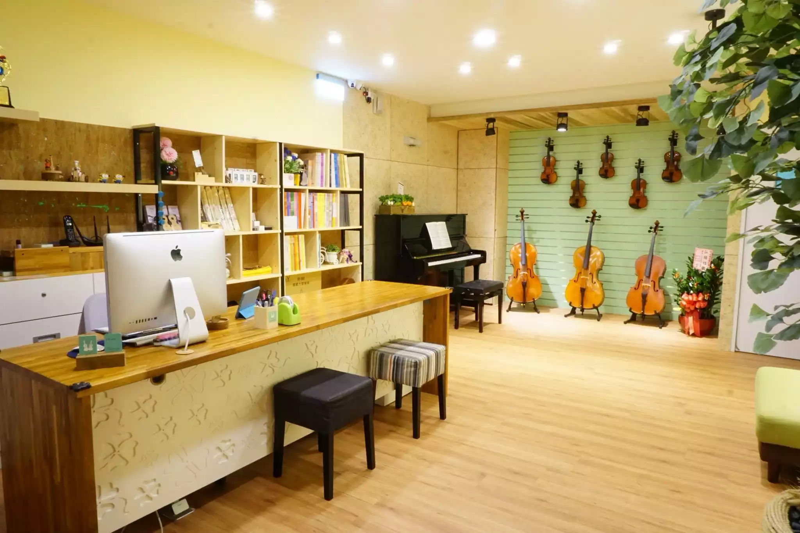

首頁
為何選采樂
師資團隊
音樂課程
展演舞台
音樂工具箱

線上練琴室
Web Audio AI Practice Tools
🎙️ Web Audio 智慧聽音雷達
開啟麥克風，讓網頁即時「看見」您的大提琴與鋼琴音波
麥克風未開啟
🎤 啟動聽音分析
🎵 視覺化智慧節拍器
精準音訊合成、視覺閃爍，您隨身的節奏好幫手
90
BPM
▶ 開始播放
✨ 采樂 AI 音樂顧問
✕
✨ 展開科技工具 ▼
📚 啟動 AI 琴史與研究分析
您好！我是采樂專屬的 AI 顧問。您可以問我音樂學習、課程、練琴方法，或直接使用上方 AI 科技工具！
發送